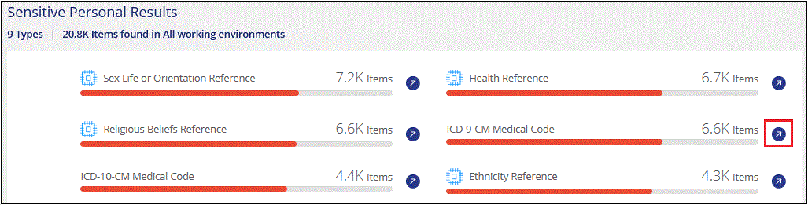
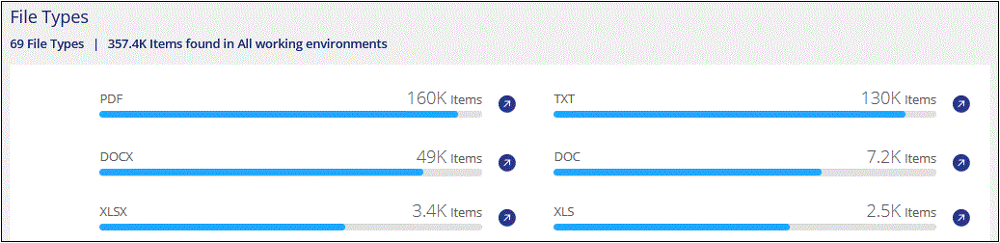

Dokumentationsänderungen beantragen
Dokumentationsänderungen beantragen In GitHub bearbeiten
In GitHub bearbeiten Leitfaden für Beitragende
Leitfaden für BeitragendeAnzeigen von Compliance-Details zu den in Ihrem Unternehmen gespeicherten Daten
Beitragende
Mehr Kontrolle über Ihre persönlichen Daten durch die Anzeige von Details zu den personenbezogenen Daten und vertraulichen personenbezogenen Daten in Ihrem Unternehmen. Lesen Sie auch die Kategorien und Dateitypen, die Cloud Data Sense in Ihren Daten finden, um für sich zu sorgen.

|
Die in diesem Abschnitt beschriebenen Funktionen sind nur verfügbar, wenn Sie eine vollständige Klassifizierungsprüfung Ihrer Datenquellen durchgeführt haben. Datenquellen, bei denen nur ein Mapping-Scan vorliegt, zeigen keine Details auf Dateiebene an. |
Standardmäßig werden im Cloud Data Sense Dashboard Compliance-Daten für alle Arbeitsumgebungen und Datenbanken angezeigt.

Wenn Sie Daten nur für einige der Arbeitsumgebungen sehen möchten, Dashboard data for specific working environments,Wählen Sie diese Arbeitsumgebungen aus.
Sie können die Ergebnisse auch auf der Seite Datenuntersuchung filtern und einen Bericht der Ergebnisse als CSV-Datei herunterladen. Siehe data in the Data Investigation page,Filtern von Daten auf der Seite „Datenuntersuchung“ Entsprechende Details.
Anzeigen von Dateien mit persönlichen Daten
Cloud Data Sense identifiziert automatisch bestimmte Wörter, Strings und Muster (Regex) in den Daten. Beispielsweise personenbezogene Daten (Personal Identification Information, PII), Kreditkartennummern, Sozialversicherungsnummern, Kontonummern, Passwörter, Und vieles mehr. "Die vollständige Liste finden Sie hier". Data Sense identifiziert diese Art von Informationen in einzelnen Dateien, in Dateien innerhalb von Verzeichnissen (Freigaben und Ordnern) und in Datenbanktabellen.
Wenn Sie außerdem einen zu scannenden Datenbankserver hinzugefügt haben, können Sie mit der Funktion Data Fusion Ihre Dateien scannen, um festzustellen, ob eindeutige Identifikatoren aus Ihren Datenbanken in diesen Dateien oder anderen Datenbanken gefunden werden. Siehe "Hinzufügen von ID-Kennungen unter Verwendung von Data Fusion" Entsprechende Details.
Für einige Arten von persönlichen Daten verwendet Data Sense Proximity Validation, um seine Ergebnisse zu validieren. Die Validierung erfolgt, indem ein oder mehrere vordefinierte Schlüsselwörter in der Nähe der gefundenen personenbezogenen Daten gesucht werden. Data Sense identifiziert zum Beispiel ein US-amerikanisches Sozialversicherungsnummer (SSN) als SSN, wenn sie neben ihr ein Näherungswort sieht - zum Beispiel SSN oder Sozialversicherung. "Der Tisch der personenbezogenen Daten" Zeigt an, wenn Data Sense die Näherungsüberprüfung verwendet.
-
Klicken Sie im Navigationsmenü von BlueXP links auf Governance > Klassifizierung und dann auf die Registerkarte Compliance.
-
Um die Angaben zu allen personenbezogenen Daten zu untersuchen, klicken Sie auf das Symbol neben dem Prozentsatz der persönlichen Daten.

-
Um die Daten für eine bestimmte Art von personenbezogenen Daten zu untersuchen, klicken Sie auf Alle anzeigen und dann auf das Symbol Ergebnisse untersuchen für einen bestimmten Typ von personenbezogenen Daten, z. B. E-Mail-Adressen.

-
Untersuchen Sie die Daten, indem Sie nach einer bestimmten Datei suchen, sortieren, Details erweitern, auf Ergebnisse untersuchen klicken, um maskierte Informationen anzuzeigen, oder laden Sie die Dateiliste herunter.
Die beiden Screenshots unten zeigen persönliche Daten in einzelnen Dateien gefunden, und in Dateien in Verzeichnissen (Freigaben und Ordner). Sie können auch die Registerkarte Structured auswählen, um persönliche Daten in Datenbanken anzuzeigen.

Anzeigen von Dateien mit vertraulichen persönlichen Daten
Cloud Data Sense identifiziert automatisch spezielle Arten von sensiblen personenbezogenen Daten, wie sie in Datenschutzvorschriften wie z. B. definiert sind "Artikel 9 und 10 der DSGVO". Beispielsweise Informationen über die Gesundheit einer Person, ethnische Herkunft oder sexuelle Orientierung. "Die vollständige Liste finden Sie hier". Data Sense identifiziert diese Art von Informationen in einzelnen Dateien, in Dateien innerhalb von Verzeichnissen (Freigaben und Ordnern) und in Datenbanktabellen.
Cloud Data Sense verwendet künstliche Intelligenz (KI), NLP (Natural Language Processing), maschinelles Lernen (ML) und Cognitive Computing (CC), um die Bedeutung des Inhalts, den es scannt, zu verstehen, um Entitäten zu extrahieren und entsprechend zu kategorisieren.
Beispielsweise ist eine sensitive DSGVO-Datenkategorie ethnisch Ursprungs. Aufgrund seiner NLP-Fähigkeiten kann Data Sense den Unterschied zwischen einem Satz unterscheiden, der "George ist Mexican" (mit vertraulichen Daten wie in Artikel 9 der DSGVO angegeben), und "George isst mexikanische Lebensmittel".
|
|
Nur Englisch wird beim Scannen sensibler personenbezogener Daten unterstützt. Support für weitere Sprachen wird später hinzugefügt. |
-
Klicken Sie im Navigationsmenü von BlueXP links auf Governance > Klassifizierung und dann auf die Registerkarte Compliance.
-
Um die Details für alle sensiblen persönlichen Daten zu untersuchen, klicken Sie auf das Symbol neben dem Prozentsatz sensibler personenbezogener Daten.

-
Um die Details für eine bestimmte Art sensibler personenbezogener Daten zu untersuchen, klicken Sie auf Alle anzeigen und klicken Sie dann auf das Symbol Ergebnisse untersuchen für einen bestimmten Typ sensibler personenbezogener Daten.

-
Untersuchen Sie die Daten, indem Sie nach einer bestimmten Datei suchen, sortieren, Details erweitern, auf Ergebnisse untersuchen klicken, um maskierte Informationen anzuzeigen, oder laden Sie die Dateiliste herunter.
Anzeigen von Dateien nach Kategorien
Cloud Data Sense verwendet die gescannten Daten und unterteilt sie in verschiedene Kategorien. Kategorien sind Themen, die auf der KI-Analyse des Inhalts und der Metadaten jeder Datei basieren. "Siehe die Liste der Kategorien".
Kategorien können Ihnen dabei helfen zu verstehen, was mit Ihren Daten passiert, indem Sie die Arten von Informationen anzeigen, die Sie haben. Beispielsweise kann eine Kategorie wie Lebensläufe oder Mitarbeiterverträge sensible Daten enthalten. Wenn Sie die Ergebnisse untersuchen, können Sie feststellen, dass Mitarbeiterverträge an einem unsicheren Ort gespeichert sind. Sie können das Problem dann beheben.
|
|
Englisch, Deutsch und Spanisch werden für Kategorien unterstützt. Support für weitere Sprachen wird später hinzugefügt. |
-
Klicken Sie im Navigationsmenü von BlueXP links auf Governance > Klassifizierung und dann auf die Registerkarte Compliance.
-
Klicken Sie auf das Symbol Ergebnisse untersuchen für eine der 4 Top-Kategorien direkt im Hauptbildschirm oder klicken Sie auf Alle anzeigen und dann auf das Symbol für eine der Kategorien.

-
Untersuchen Sie die Daten, indem Sie nach einer bestimmten Datei suchen, sortieren, Details erweitern, auf Ergebnisse untersuchen klicken, um maskierte Informationen anzuzeigen, oder laden Sie die Dateiliste herunter.
Anzeigen von Dateien nach Dateitypen
Cloud Data Sense verwendet die gescannten Daten und werden nach Dateityp unterteilt. Die Überprüfung Ihrer Dateitypen kann Ihnen helfen, Ihre sensiblen Daten zu kontrollieren, da Sie möglicherweise feststellen können, dass bestimmte Dateitypen nicht richtig gespeichert sind. "Siehe die Liste der Dateitypen".
Sie können beispielsweise CAD-Dateien speichern, die sehr sensible Informationen über Ihr Unternehmen enthalten. Wenn diese nicht gesichert sind, können Sie die Kontrolle über vertrauliche Daten übernehmen, indem Sie Berechtigungen beschränken oder Dateien an einen anderen Speicherort verschieben.
-
Klicken Sie im Navigationsmenü von BlueXP links auf Governance > Klassifizierung und dann auf die Registerkarte Compliance.
-
Klicken Sie auf das Symbol Ergebnisse untersuchen für einen der 4 wichtigsten Dateitypen direkt vom Hauptbildschirm aus, oder klicken Sie auf Alle anzeigen und dann auf das Symbol für einen der Dateitypen.

-
Untersuchen Sie die Daten, indem Sie nach einer bestimmten Datei suchen, sortieren, Details erweitern, auf Ergebnisse untersuchen klicken, um maskierte Informationen anzuzeigen, oder laden Sie die Dateiliste herunter.
Anzeigen von Dateimetadaten
Klicken Sie im Bereich „Untersuchungsergebnisse“ auf  Für jede einzelne Datei, um die Dateimetadaten anzuzeigen.
Für jede einzelne Datei, um die Dateimetadaten anzuzeigen.

Zusätzlich zur Anzeige der Arbeitsumgebung und des Volumes, in dem sich die Datei befindet, werden durch die Metadaten viel mehr Informationen angezeigt, einschließlich der Dateiberechtigungen, des Dateieigentümers, ob es Duplikate dieser Datei gibt und des zugewiesenen AIP-Etiketts (falls vorhanden) "Integrierte AIP in Cloud Data Sense"). Diese Informationen sind hilfreich, wenn Sie Vorhaben "Erstellen von Richtlinien" Da Sie alle Informationen anzeigen können, die Sie zum Filtern Ihrer Daten verwenden können.
Beachten Sie, dass nicht alle Informationen für alle Datenquellen verfügbar sind – und genau die Informationen, die sich für diese Datenquelle eignen. Beispielsweise sind der Volume-Name, die Berechtigungen und AIP-Labels nicht für Datenbankdateien relevant.
Wenn Sie die Details für eine einzelne Datei anzeigen, gibt es einige Aktionen, die Sie für die Datei ergreifen können:
-
Sie können die Datei verschieben oder in eine beliebige NFS-Freigabe kopieren. Siehe "Quelldateien werden in eine NFS-Freigabe verschoben" Und "Quelldateien werden in eine NFS-Freigabe kopiert" Entsprechende Details.
-
Sie können die Datei löschen. Siehe "Quelldateien werden gelöscht" Entsprechende Details.
-
Sie können der Datei einen bestimmten Status zuweisen. Siehe "Tags werden angewendet" Entsprechende Details.
-
Sie können die Datei einem BlueXP-Benutzer zuweisen, damit er für alle Follow-up-Aktionen verantwortlich ist, die in der Datei ausgeführt werden müssen. Siehe "Zuweisen von Benutzern zu einer Datei" Entsprechende Details.
-
Wenn Sie AIP-Etiketten mit Cloud Data Sense integriert haben, können Sie dieser Datei eine Bezeichnung zuweisen oder zu einer anderen Bezeichnung wechseln, wenn sie bereits vorhanden ist. Siehe "Manuelles Zuweisen von AIP-Beschriftungen" Entsprechende Details.
Anzeigen von Berechtigungen für Dateien und Verzeichnisse
Um eine Liste aller Benutzer oder Gruppen anzuzeigen, die Zugriff auf eine Datei oder ein Verzeichnis haben, und die Arten von Berechtigungen, die sie haben, klicken Sie auf Alle Berechtigungen anzeigen. Diese Schaltfläche gilt nur für Daten in CIFS Shares, SharePoint Online, SharePoint On-Premises und OneDrive.
Beachten Sie, dass Sie Active Directory in Data Sense integrieren sollten, wenn Sie SIDs (Security Identifiers) anstelle von Benutzer- und Gruppennamen sehen. "So geht’s".

Klicken Sie auf  Für jede Gruppe, um die Liste der Benutzer anzuzeigen, die Teil der Gruppe sind.
Für jede Gruppe, um die Liste der Benutzer anzuzeigen, die Teil der Gruppe sind.
Darüber Hinaus Sie können auf den Namen eines Benutzers oder einer Gruppe klicken und die Untersuchungsseite wird mit dem Namen dieses Benutzers oder dieser Gruppe angezeigt, der im Filter „Benutzer-/Gruppenberechtigungen“ ausgefüllt ist, sodass Sie alle Dateien und Verzeichnisse sehen können, auf die der Benutzer oder die Gruppe Zugriff hat.
In den Storage-Systemen werden nach doppelten Dateien gesucht
Sie können sehen, ob doppelte Dateien auf Ihren Storage-Systemen gespeichert werden. Dies ist nützlich, wenn Sie Bereiche ermitteln möchten, in denen Sie Speicherplatz einsparen können. Zudem ist es hilfreich, sicherzustellen, dass Dateien mit bestimmten Berechtigungen oder vertraulichen Informationen in Ihren Speichersystemen nicht unnötig dupliziert werden.
Data Sense verwendet Hashing-Technologie zur Bestimmung doppelter Dateien. Wenn eine Datei den gleichen Hash-Code wie eine andere Datei hat, können wir zu 100% sicher sein, dass die Dateien exakte Duplikate sind - auch wenn die Dateinamen unterschiedlich sind.
Sie können die Liste mit doppelten Dateien herunterladen und an Ihren Storage-Administrator senden, damit er jederzeit entscheiden kann, welche Dateien gelöscht werden können. Oder Sie können "Löschen Sie die Datei" Wenn Sie sicher sind, dass keine bestimmte Version der Datei benötigt wird.
Anzeigen aller duplizierten Dateien
Wenn Sie eine Liste aller Dateien wünschen, die in den Arbeitsumgebungen und Datenquellen, die Sie scannen, dupliziert werden, können Sie den Filter Duplicates > has Dubletten auf der Seite Data Investigation verwenden.
Alle Dateien mit Duplikaten aus allen Dateitypen (ohne Datenbanken), mit einer Mindestgröße von 50 MB und/oder mit persönlichen oder sensiblen persönlichen Informationen, werden auf der Ergebnisseite angezeigt.
Anzeigen, ob eine bestimmte Datei doppelt vorhanden ist
Wenn Sie sehen möchten, ob eine einzelne Datei Duplikate enthält, klicken Sie im Bereich „Untersuchungsergebnisse“ auf  Für jede einzelne Datei, um die Dateimetadaten anzuzeigen. Wenn es Duplikate einer bestimmten Datei gibt, werden diese Informationen neben dem Feld Duplicates angezeigt.
Für jede einzelne Datei, um die Dateimetadaten anzuzeigen. Wenn es Duplikate einer bestimmten Datei gibt, werden diese Informationen neben dem Feld Duplicates angezeigt.
Klicken Sie auf Details anzeigen, um die Liste der duplizierten Dateien anzuzeigen und wo sie sich befinden. Klicken Sie auf der nächsten Seite auf Duplicates anzeigen, um die Dateien auf der Untersuchungsseite anzuzeigen.


|
Sie können den auf dieser Seite angegebenen "Datei-Hash"-Wert verwenden und direkt auf der Untersuchungsseite eingeben, um jederzeit nach einer bestimmten doppelten Datei zu suchen - oder Sie können sie in einer Richtlinie verwenden. |
Anzeigen von Dashboard-Daten für bestimmte Arbeitsumgebungen
Sie können die Inhalte des Cloud Data Sense Dashboards filtern, um Compliance-Daten für alle Arbeitsumgebungen und Datenbanken oder nur bestimmte Arbeitsumgebungen anzuzeigen.
Wenn Sie das Dashboard filtern, können Sie mit Data Sense die Compliance-Daten und -Berichte genau auf die von Ihnen ausgewählten Arbeitsumgebungen anwenden.
-
Klicken Sie auf das Dropdown-Menü Filter, wählen Sie die Arbeitsumgebungen aus, für die Sie Daten anzeigen möchten, und klicken Sie auf Ansicht.

Filtern von Daten auf der Seite „Datenuntersuchung“
Sie können den Inhalt der Untersuchungsseite filtern, um nur die Ergebnisse anzuzeigen, die Sie sehen möchten. Dies ist eine sehr leistungsstarke Funktion, denn nachdem Sie die Daten verfeinert haben, können Sie die Buttonleiste oben auf der Seite verwenden, um eine Vielzahl von Aktionen durchzuführen, wie das Kopieren von Dateien, Verschieben von Dateien, Hinzufügen eines Tags oder AIP-Label zu den Dateien und vieles mehr.
Wenn Sie den Inhalt der Seite nach der Verarbeitung als Bericht herunterladen möchten, klicken Sie auf die Schaltfläche  Schaltfläche. Sie können den Bericht lokal als .CSV-Datei (die bis zu 5,000 Datenzeilen umfassen kann) oder als JSON-Datei speichern, die Sie in eine NFS-Freigabe exportieren (die eine unbegrenzte Anzahl von Zeilen enthalten kann). "Weitere Informationen zu Untersuchungsberichten finden Sie hier".
Schaltfläche. Sie können den Bericht lokal als .CSV-Datei (die bis zu 5,000 Datenzeilen umfassen kann) oder als JSON-Datei speichern, die Sie in eine NFS-Freigabe exportieren (die eine unbegrenzte Anzahl von Zeilen enthalten kann). "Weitere Informationen zu Untersuchungsberichten finden Sie hier".
-
Auf den Registerkarten der obersten Ebene können Sie Daten aus Dateien (unstrukturierte Daten), Verzeichnissen (Ordner und Dateifreigaben) oder aus Datenbanken (strukturierte Daten) anzeigen.
-
Mit den Steuerelementen oben in jeder Spalte können Sie die Ergebnisse in numerischer oder alphabetischer Reihenfolge sortieren.
-
Mit den Filtern im linken Fensterbereich können Sie die Ergebnisse verfeinern, indem Sie aus den folgenden Attributen auswählen:
Filtern Details Richtlinien
Wählen Sie eine Richtlinie oder Richtlinien aus. Los "Hier" Um die Liste der vorhandenen Richtlinien anzuzeigen und eigene Richtlinien zu erstellen.
Analysestatus
Wählen Sie eine Option aus, um die Liste der Dateien anzuzeigen, die den ersten Scan ausstehend, den Scanvorgang abgeschlossen haben, den ausstehenden Rescan oder die nicht gescannt wurden.
Öffnen Sie Berechtigungen
Wählen Sie den Berechtigungstyp innerhalb der Daten und in Ordnern/Shares aus
Benutzer-/Gruppenberechtigungen
Wählen Sie einen oder mehrere Benutzernamen und/oder Gruppennamen aus, oder geben Sie einen Teilnamen ein
Dateieigentümer
Geben Sie den Namen des Dateieigentümers ein
Etikett
Wählen Sie "AIP-Etiketten" Die Ihren Dateien zugewiesen sind
Art Der Arbeitsumgebung
Wählen Sie den Typ der Arbeitsumgebung aus. OneDrive, SharePoint und Google Drive sind unter „Apps“ kategorisiert.
Name der Arbeitsumgebung
Wählen Sie spezielle Arbeitsumgebungen aus
Storage Repository
Wählen Sie das Speicher-Repository aus, z. B. ein Volume oder ein Schema
Dateipfad
Geben Sie einen Teil- oder vollständigen Pfad ein
Kategorie
Wählen Sie die aus "Arten von Kategorien"
Empfindlichkeitsstufe
Wählen Sie die Empfindlichkeitsstufe aus: Persönlich, sensibel persönlich oder nicht empfindlich
Anzahl der Kennungen
Wählen Sie den Bereich der erkannten empfindlichen Kennungen pro Datei aus. Hierzu zählen personenbezogene Daten und sensible personenbezogene Daten. Beim Filtern in Verzeichnissen werden die Matches von allen Dateien in jedem Ordner (und Unterordnern) angezeigt.
Persönliche Daten
Wählen Sie die aus "Arten personenbezogener Daten"
Sensible Personenbezogene Daten
Wählen Sie die aus "Arten sensibler personenbezogener Daten"
Betroffene Person
Geben Sie den vollständigen Namen oder die bekannte Kennung eines Betroffenen ein
Verzeichnistyp
Wählen Sie den Verzeichnistyp aus, entweder „Share“ oder „Folder“.
Dateityp
Wählen Sie die aus "Dateitypen"
Dateigröße
Wählen Sie den Dateigrößenbereich aus
Erstellungszeit
Wählen Sie einen Bereich aus, in dem die Datei erstellt wurde
Entdeckte Zeit
Wählen Sie einen Bereich aus, in dem Data Sense die Datei entdeckt hat
Zuletzt Geändert
Wählen Sie einen Bereich aus, in dem die Datei zuletzt geändert wurde
Zuletzt Aufgerufen
Wählen Sie einen Bereich aus, auf den die Datei zuletzt zugegriffen wurde. Bei den Dateitypen, die von Data Sense gescannt werden, ist dies das letzte Mal, wenn Data Sense die Datei gescannt hat.
Duplikate
Wählen Sie aus, ob die Datei in den Repositorys dupliziert wird
Datei-Hash
Geben Sie den Hash der Datei ein, um eine bestimmte Datei zu finden, selbst wenn der Name anders ist
Tags
Wählen Sie "Das Tag oder die Tags" Die Ihren Dateien zugewiesen sind
Zugewiesen Zu
Wählen Sie den Namen der Person aus, der die Datei zugeordnet ist
Beachten Sie, dass die in der Schaltflächenleiste und in den Richtlinien verfügbaren Aktionen derzeit nicht auf der Ebene „Verzeichnis“ unterstützt werden.